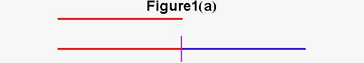
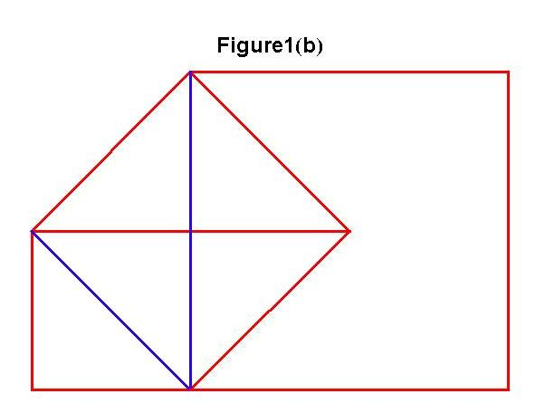
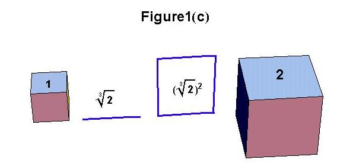
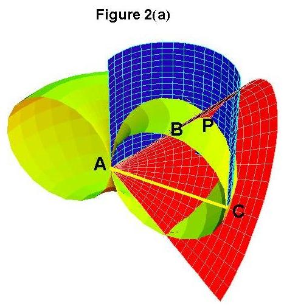
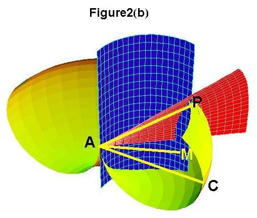
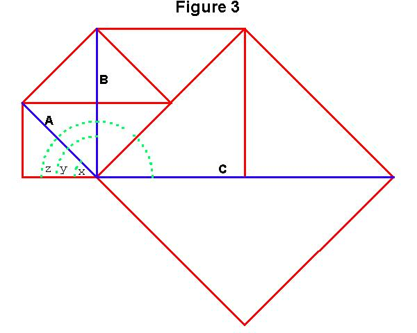
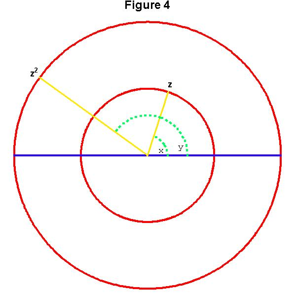
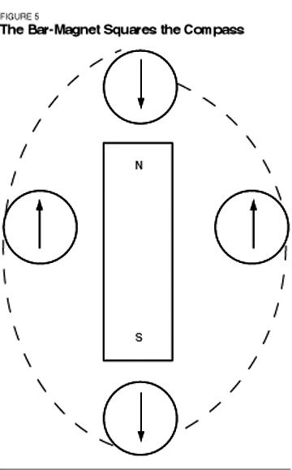
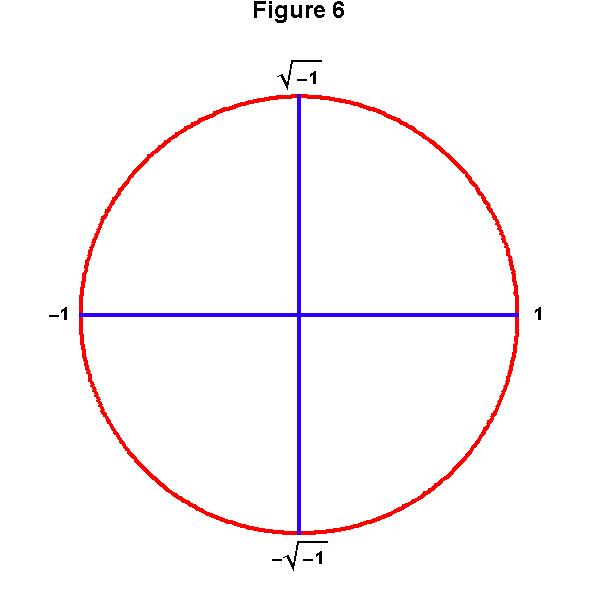

Riemann for Anti-Dummies Part 27
GAUSS' DECLARATION OF INDEPENDENCE
In September 1798, after three years of self-directed study, C.F. Gauss, then 21 years old, left Goettingen University without a diploma. He returned to his native city of Brunswick to begin the composition of his "Disquisitiones Arithmeticae." lacking any prospect of employment, he hoped to continue receiving his student stipend. After several months of living on credit, word came from the Duke that the stipend would continue, provided Gauss obtained his doctor of philosophy degree, a task Gauss thought a distraction and wished to postpone.
Nevertheless, he took the opportunity to produce a virtual declaration of independence from the stifling world of deductive mathematics, in the form of a written thesis submitted to the faculty of the University of Helmstedt, on a new proof of the fundamental theorem of algebra. Within months, he was granted his doctorate without even being required to appear for oral examination.
Describing his intention to his former classmate, Wolfgang Bolyai, Gauss wrote, "The title indicates quite definitely the purpose of the essay; only about a third of the whole, nevertheless, is used for this purpose, the remainder contains chiefly the history and a critique of works on the same subject by other mathematicians (viz. d'Alembert, Bougainville, Euler, de Foncenex, Lagrange, and the encyclopedists ... which latter, however, will probably not be much pleased) besides many and varied comments on the shallowness which is so dominant in our present-day mathematics."
In essence, Gauss was defending, and extending, a principle, that goes back to Plato, in which only physical action, not arbitrary assumptions, defines our notion of magnitude. Like Plato, Gauss also recognized it were not sufficient to simply state his discovery, without a polemical attack on the Aristotelean falsehoods that had become so popular among his contemporaries.
Looking back on his dissertation 50 years later, Gauss said, "The demonstration is presented using expressions borrowed from the geometry of position, for in this way, the greatest acuity and simplicity is obtained. Fundamentally, the essential content of the entire argument belongs to a higher domain, independent from space, (i.e., anti-Euclidean) in which abstract general concepts of magnitudes, are investigated as combinations of magnitudes connected by continuity, a domain, which, at present, is poorly developed, and in which one cannot move without the use of language borrowed from spatial images."
It is the intention of this installment to provide a summary sketch of the history of this conception, and Gauss' development of it. Because of the difficulties of this medium, it can not be exhaustive. Rather, it seeks to outline the steps which should form the basis for extended oral pedagogical dialogues, such as is already underway in various locations.
Multiply-Extended Magnitude
A physical concept of magnitude was already fully developed by those circles associated with Plato, expressed most explicitly in the Meno, Theatetus, and Timaeus dialogues. Plato and his circle demonstrated this concept, pedagogically, through the paradoxes that arise when considering the uniqueness of the five regular solids, and the related problems of doubling a line, square, and cube. As Plato emphasized, each species of action, generated a different species of magnitude. He denoted such magnitudes by the Greek term, "dunamais", a term akin to Leibniz' use of the word "kraft", translated into English as "power". That is, a linear magnitude has the "power" to double a line, while only a magnitude of a different species has the "power" to double the square, and a still different species has the "power" to double a cube. (See figures 1a, 1b and 1c). In Riemann's language, these magnitudes are called, respectively, simply, doubly, and triply extended. Plato's circle emphasized that magnitudes of lesser extension lacked the capacity to generate magnitudes of higher extension, creating, conceptually, a succession of "higher powers".
 |
 |
 |
Do not think here of the deductive use of the term "dimension". While a perfectly good word, "dimension" in modern usage too often is associated with the Kantian idea of formal Euclidean space, in which space is considered as a combination of three independent simply-extended dimensions. Think instead of "physical extension". A line is produced by a physical action of simple-extension. A surface may be bounded by lines, but it is not made from lines, rather, a surface is irreducibly doubly-extended. Similarly, a volume may be bounded by surfaces, which in turn are bounded by lines, but, it is irreducibly triply-extended. Thus, a unit line, square, or cube, may all be characterized by the number One, but each One, is a species of a different power.
Plato's circle also emphasized, that this succession of magnitudes of higher powers were generated by a succession of different types of action. Specifically, a simply-extended magnitude was produced from linear action, doubly-extended magnitudes from circular action, and triply-extended magnitudes from extended-circular action, exemplified by that action which produces a cone, cylinder, or torus. This is presented, pedagogically, by Plato in the Meno, with respect to doubly-extended magnitudes, and the Timaeus with respect to the uniqueness of the five regular solids, and the problem of doubling the cube. Plato's collaborator, Archytus, and Plato's student, Menechmus, also demonstrated that the magnitude associated with doubling of the cube, was not generated by circular action, but from extended circular action, i.e., conic sections. (See figures 2a and 2b).(Archytus constructed the cubed root of two by the intersection of torus, cylinder, and cone. Menechmus used two parabolas. See figures.)
 |
 |
It fell to Appolonius of Perga (262-200 B.C.) to present a full exposition of the generation of magnitudes of higher powers in his work on Conics. His approach was to exhaustively investigate the generation of doubly and triply-extended magnitudes, which he distinguished into plane (circle/line) and solid (ellipse, parabola, hyperbola) loci.
As Kaestner indicates in his "History of Mathematics", the investigation of the relationships among higher powers, gave rise, to what became known by the Arabic word, algebra, and, from Leibniz on, as analysis. Here, the relationship of magnitudes of the second power (squares) and the third power (cubes) were investigated in the form of quadratic and cubic algebraic equations, respectively, while equations of higher degree took on a formal significance, but lacked the physical connection of quadratics and cubics.
Cardan, and later, Leibniz, showed, there was a "hole" in all forms of algebraic equations, as indicated by the appearance of the square roots of negative numbers as solutions to such equations. Peering into this "hole", Leibniz recognized that algebra could teach nothing about the physics, but, that a general physical principle underlay all algebraic equations, of whatever power. Writing to Huyghens on the square roots of negative numbers, Leibniz said he invented a machine which produced exactly the required physical action:
"It seems that after this instrument, there is almost nothing more to be desired for the use which algebra can or will be able to have in mechanics and in practice. It is believable that this was the aim of the geometry of the ancients (at least that of Appolonius) and the purpose of loci that he had introduced, because he had recognized that a few lines determine instantly, what long calculations in numbers could achieve only after long work capable of discouraging the most firm."
(I don't know the exact construction of Leibniz' device, but, undoubtedly such an instrument would be constructed using his principle of the catenary and its relationship to logarithms.)
While finding the physical action that generated a succession of higher powers, Leibniz left open the question of what physical action produced the square roots of negative numbers.
Gauss' Proof
By the time Gauss left Goettingen, he had already developed a concept of the physical reality of the square roots of negative numbers, which he called, complex numbers. Adopting the method of Plato's cave metaphor, Gauss understood his complex numbers to be shadows reflecting a complex of physical action, (action acting on action). This complex action reflected a power greater than the triply-extended action that characterizes the manifold of visible space. It was Gauss' unique contribution, to devise a metaphor, from which to represent these higher forms of physical action, so those actions could be represented, by their reflections, in the visible domain.
In his 1799 dissertation, Gauss brilliantly chose to develop his metaphor, polemically, on the most vulnerable flank of his enemies' algebraic equations. Like Leibniz, Gauss rejected the deductive approach of investigating algebraic equations on their own terms, insisting that it was physical action that determined the characteristics of the equations.
A simple example will help illustrate the point. Think of the physical meaning of the equation x2 = 4. Obviously, "x" refers to a side of a square whose area is 4. Thus, 2 is a solution to this equation. Now, think of the physical meaning of the equation x2 = -4. From a formal deductive standpoint, this equation refers to the side of a square whose area is - 4. But, how can a square have an area of - 4? Formally, the second equation can be solved by introducing the number 2 √-1, or 2 i, which when squared equals - 4. But, the question remains, what is the physical meaning of √-1? One answer is to say that √-1 has no physical meaning, and thus the equation x2 = -4 has no solution. To this, Euler and Lagrange added the sophistry, richly ridiculed by Gauss in his dissertation, that the equation x2 = -4 has a solution, but the solution is impossible!
Gauss demonstrated the physical meaning of the √-1, not in the visible domain of squares, but in the cognitive domain, of the principle of squaring.
This can be illustrated pedagogically, by drawing a square whose area we'll call 1. Then draw the diagonal of that square, and draw a new square using that diagonal as a side. The area of the new square will be 2. Now, repeat this action, again to generate a square whose area is 4. (Figure 3)
 |
What is the principle of squaring so illustrated? The action that generated the magnitude which produced the square whose area is 2, was a rotation of 45 degrees and an extension of length from 1 to the √2. To produce the square whose area is 4, that rotation of 45 degrees was doubled to 90 degrees, and the extension was squared to become 2. Repeat this process several times, to illustrate that the principle of squaring, can be thought of as the combined physical action of doubling a rotation and squaring the length. The square root is simply the reverse action. That is, halving the angle of rotation and decreasing the length by the square root.
Now draw a circle and a diameter, and apply this physical action of squaring to every point on the circle. That is, take every point on the circumference of the circle. Draw the radius connecting that point to the center of the circle. That radius makes an angle with the diameter you drew. To "square" that point, double the angle between the radius and the diameter, and square the length. Repeat this action with several points. Soon you will be able to see that the points on the first circle all map to points on another concentric circle, whose radius is the square of the original circle.
But, it gets curiouser and curiouser. Since you doubled the angle each time you squared a point, the original circle will map to the "squared" circle twice! (Figure 4)
 |
There is a physical example that illustrates this process. Take a bar magnet and rotate a compass around the magnet. As the compass moves from the north to south pole of the magnet, it will make one complete revolution. As it moves from the south pole back to the north, the compass will make another complete revolution. In effect, the bar magnet "squares" the compass! (Figure 5)
 |
Gauss associated his complex numbers with this type of compound physical action, (rotation combined with extension), and made them visible, metaphorically, as spiral action projected onto a surface. Every point on that surface represents a complex number. Each number denotes a unique combination of rotation and extension. The point of origin of the action ultimately refers to a physical singularity, such as the lowest point of the catenary, or the poles of the rotating Earth, or the center of the bar magnet.
In the above example, the original circle becomes a unit circle in the complex domain. The center of the circle is the origin, denoted by 0, the ends of the diameter are denoted by 1 and -1. The √-1 is found by halving the rotation between 1 and -1 and reducing the radius by the square root. Think carefully, and you will see that √-1 and -√-1 are represented by the points on the circumference which are half-way between 1 and -1. (Figure 6)
 |
Gauss demonstrated that all algebraic powers, of any degree, when projected onto his complex domain, could be represented by an action similar to that just demonstrated for squaring. For example, the action of cubing a complex number is accomplished by tripling the angle of rotation and cubing the length. This maps the original circle three times onto a circle whose radius is the cube of the original circle. The action associated with the bi-quadratic power (fourth degree) involves quadrupling the angle of rotation and squaring the square of the length. This will map the original circle 4 times onto a circle whose radius is increased by the square of the square, and so forth for the all higher powers.
Thus, even though the manifolds of action associated with these higher powers exist outside the triply-extended manifold of visible space, the characteristic of action which produced them, is brought into view, by Gauss, in his complex domain.
In the next installment we will work through the next part of Gauss' demonstration, in which he constructed surfaces to represent these higher forms of physical action.
{kind=link}
{kind=link}
{kind=link}
{kind=link}
{kind=link}
{kind=link}
{kind=link}
{kind=link}
{kind=link}